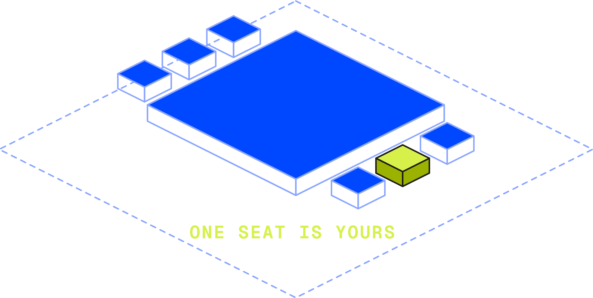

A post is one composed graphic carrying one idea, published with a caption. Every post is built the same way: an identity row, one to four content rows, and an action row, on a 1080 canvas with an 80 margin and three gap values. What varies is how many content rows the frame carries, which patterns they take, and — rarely — whether a frame leaves paper (A4). A share preview is the separate case — one image that travels with a tcules.com URL into a link card — and it is in Part C.
Colour is by token and value; the ramps live in chapter 02. Imagery follows chapter 05.
Anything exported as one image that carries type: a single post, a carousel frame, a thumbnail, a cover. Chapter 05's rule against text baked into an image applies to an image box inside the graphic, and the graphic itself is type by design.
Three type families, the warm neutrals, "blue means clickable", the surface model, and chapter 05's isometric-line illustration direction. Where a 1080 canvas needs a value the site has no use for — a counter, a QR block, a swipe arrow — this chapter is the authority.
The canvas, the 80 margin, the gap ladder, the type ladder and the identity row hold on every graphic. They are settled, so the work goes into the ground, the patterns and the illustration.
Composed graphics export at their platform master. Chapter 05's 2560px floor covers on-page imagery and does not apply here.
Eight sections that hold on every composed graphic Tcules publishes.
Everything after this section is craft; this section is identity.
| № | Rule | Pass condition |
|---|---|---|
| 01 | One idea per frame | A frame carries one argument, plus the facts a reader needs to act on it. A second argument is a second frame. |
| 02 | Blue marks what can be acted on | brandeis-500 marks an action, an apply line, a button, the leading rule of a quotation, and the line work in an illustration. Eyebrows, figures, row numbers and moods take neutral ink. |
| 03 | Two peridot marks per set, at most | Two across a whole carousel or a whole frame, never on adjacent frames. One is the norm. A marked phrase and a peridot label in an illustration each spend one. |
| 04 | One ground per frame | Paper on more than half of every set, paper-deep secondary, ink and brandeis-500 one frame at most (A4). Flat, edge to edge. |
| 05 | Margins equal on all four sides | --social-margin = 80. A deliberately bled image box is the one thing that crosses it. |
| 06 | Vertically adjacent elements take different families | Mono eyebrow → serif hero → sans support. Serif row title → sans row body. The alternation is the brand. |
| 07 | Structure comes from rules, grounds and alignment | Radius 0 on every canvas in this chapter. No card, shadow, rounded container, blur or glass — except the one --img-crop-elevation behind a cut-out (chapter 05 §2a). |
| 08 | Sentence case | Caps as a typographic device only: mono labels uppercase at .12em tracking. |
| 09 | Every number is sourced | A figure carries its n, window or scope. A date carries its day and year. |
| 10 | 22px is the floor | --social-type-min = 22px, the mono eyebrow and counter. Everything on a 1080px canvas is set at 22px or larger. |
The margin and the ladder are the same on every graphic, whatever it carries. A frame that needs more room loses a content row; it does not tighten its margin.
All four sides, on every canvas. On story it sits inside the 240 platform bands. --social-margin
Bind, row, field. Every distance in a frame is one of the three. --social-bind --social-row
The smallest type on any canvas here. --social-type-min
Every frame is a single grid: an identity row, one to four content rows, and an action row. Exactly one row grows and shrinks — the illustration, or the headline block — and it is set to minmax(0,1fr) so a tall illustration shrinks rather than pushing the action row off the canvas. Every other row is its own height.
| Row | Count | Carries |
|---|---|---|
| Identity | 1 | The wordmark, in one of the two arrangements in A6. When it sits at the top it may take a mono status line opposite and a 1px hairline beneath the row. |
| Content | 1–4 | One of the ten patterns in B2 each: a headline block, a statement, an illustration, an image box and its caption, a list, a quote, a profile, a terms line, a figure, a relationship line. |
| Action | 1 | One of the three fills in B2: a mono action line; a URL with a Button; or dated facts with a QR. A frame with nothing to act on carries the wordmark here instead and the identity row moves to the footer. |
Four content rows is the ceiling. A fifth means the frame is carrying a second idea, and the argument belongs in a carousel.
| Canvas | Size · px | Choose it when |
|---|---|---|
| Portrait | 1080 × 1350 | A carousel, always — LinkedIn takes the set as one document and portrait gives each frame the most feed height. And any frame with three or four content rows. |
| Square | 1080 × 1080 | A frame with one or two content rows. Anything cross-posted to X, which crops hard in-timeline. Anything reshared into a story, where the extra 270px of portrait falls inside the platform's own furniture. |
| Story | 1080 × 1920 | Story-first content, on the ladder in A3. Also the reshare: a square frame centred on its own ground extended. The 240px bands top and bottom are the platform's. |
| Thumbnail | 1280 × 720 export 2560 × 1440 | YouTube, to the spec in D1. Authored at 1280 × 720px and exported at 2×. 1920 × 1080px is the floor; below it the title softens at the size a thumbnail is actually shown. |
The same shell on all four, drawn at one width so the proportions compare. What changes between them is how much live height there is to spend, and so how many rows fit and which action row the frame can carry.
One canvas per set. All seven frames of a carousel take the same one, so the platform presents the set without letterboxing.
Clearance inside a row. An illustration's row carries slack, and it collects on the side facing the type. A hairline under the identity row or above the action row sits 24 from the content beside it. Inside a labelled pair — a name and its role, a label and its date — 12, 16 and 24 are the steps.
Export. PNG for any frame with type; JPG q85 for a photograph-only frame. A carousel exports as one PDF at 1080 × 1350px, in order, cover first, plus individual PNGs for Instagram. A frame that will be printed or pinned up exports a one-page PDF at canvas size alongside the PNG. File name tcules-YYMMDD-type-slug-01.png.
Sizes are absolute on the 1080 canvas. The ceiling is the point at which the copy is cut: the ladder has no in-between steps, so a sentence that overruns loses words.
| Slot | Face · size px / leading | Tracking | Ceiling |
|---|---|---|---|
| Hero, closer | Newsreader 400 · 88 / 1.06 · opsz 72 | −.022em | 2 lines · 40 characters |
| Hero, long | Newsreader 400 · 72 / 1.10 · opsz 72 | −.020em | 2–3 lines · 55 characters |
| Statement, list headline, hero in a split column | Newsreader 400 · 64 / 1.14 · opsz 72 as a hero, 1.12 | −.018em | 2–3 lines · 85 characters. As a hero, 55 |
| Date, caption, quote, profile name | Newsreader 400 · 52 / 1.20 · opsz 72 the quote italic at 1.35 | −.012em | Quote 4 lines · 170 characters. Caption 3 lines · 100. Date and name 1 line |
| Row title, attribution name | Newsreader 500 · 42 / 1.25 | 0 | 1 line · 20 characters |
| Support | Public Sans 400 · 32 / 1.40 | 0 | 2 lines · 110 characters |
| Role, fact note, row body | Public Sans 400 · 24 / 1.50 | 0 | 1 line · 46 characters |
| Action line, illustration label, relationship line | Geist Mono 600 · 24 · uppercase | +.12em label +.08em | 1 line · 24 characters. The relationship line 2 lines · 60 |
| Eyebrow, status, terms, counter | Geist Mono 600 · 22 / 1.20 · uppercase | +.12em | 1 line · 44 characters |
| Numerals | Geist Mono 500 · 160–300 the figure, 38 a list row number | −.03em | 4 characters. One figure per frame |
The ceiling is a cut. Copy that runs past its ceiling loses words. There is no step-down and no resize: a size that moves to accommodate a sentence stops being a ladder, and one frame in a set then reads at a different rank from the others. The hero is the one slot with a choice of rung, and the choice is made on the character count before the copy is set: 88 to 40 characters, 72 to 55, and 64 where the hero sits in a split column beside an illustration or an image plate. The rung is picked once for a set, so every frame in it still reads at the same rank. On square, a three-line hero takes 72 by that rule rather than by exception.
On the square canvas every ceiling loses a line. The canvas drops 270px against portrait, so a hero runs to two lines and a captioned image box carries two. Check the ceiling against the canvas being exported.
Ten slots, and no measure. A line wraps at the live width and the character ceiling is what stops it, so there is one number to check rather than a measure and a word count that can contradict each other. Display copy keeps text-wrap: balance so a two-line hero breaks evenly.
The shell is the same on all three: margin 80px, the gap ladder, one identity row, one action row. What changes is how much live height there is to spend, and so how many content rows fit and where the ceilings land. Every figure below is derived from the ladder rather than chosen.
| Measure | Portrait · 1080 × 1350px | Square · 1080 × 1080px | Story · 1080 × 1920px |
|---|---|---|---|
| Margin | 80px | 80px | 80px, inside the bands |
| Platform clear | — | — | 240px top and bottom |
| Live area | 920 × 1190px | 920 × 920px | 920 × 1280px |
| Identity row | 65px | 65px | 65px |
| Action row | Line 54 · Button 81 · QR 178–202px | Line 54 · Button 81px | Line 54px, plus a 144px sticker slot above it |
| Content block | 1023px | 753px | 969px |
| Content rows | 1–4 | 1–2 | 1–2 |
| Illustration row | 476–655px | 368–506px | 576–832px |
| Image box | 640px | 440px | 720px |
| Hero | 88px | 88px, or 72px at three lines | 88px |
| Hero ceiling | 2–3 lines · 55 char | 2 lines · 55 char | 2 lines · 40 char |
| Support ceiling | 2 lines · 110 char | 1 line · 55 char | 2 lines · 80 char |
How each one is built. Identity row = the mark at 40px, a bind, and the 1px hairline, so 65px. Action row = the hairline, a bind, and the tallest member: the mono line at 24px on Line, the Button on Button, the QR block on QR. Content block = live height less the identity row, a Line action row, and a bind against each; Button takes 27px more from it and QR 124–148px. Illustration row = its share of live height, per canvas, in Fitting an illustration below.
The square step. Square holds the portrait sizes and loses a line off every ceiling. The one sanctioned move is the hero at 72px where the copy runs to three lines, and it is declared for the set rather than reached for on a single frame to rescue a sentence. Below 72px the answer is to cut.
The live width is 920px on both canvases, so nothing reflows and no line rewraps. Only height is short: the content block falls from 1023px to 753px, a deficit of 270px. That is the whole problem, and it is a smaller problem than it looks.
The content is kept. Every row, every sentence and every word carries over, and the 270px is found in the order below. Reducing the copy is the last step rather than the first, and a frame whose square version says less than its portrait version is two frames that will be reviewed against each other forever.
| № | Step | Returns | Detail |
|---|---|---|---|
| 01 | The illustration goes to its square ceiling | 149px | From the portrait ceiling of 655px to the square ceiling of 506px. Redrawn smaller rather than scaled down, per Fitting an illustration. More than half the deficit, and on most frames it is the only step needed. |
| 02 | The hero steps 88px → 72px | 28–42px | 28px across two lines, 42px across three. Declared for the whole set, not reached for on one frame — the sanctioned step above. |
| 03 | The support line comes off | 69px | The line at 32px/1.4 is 45px, plus the 24px bind holding it to the hero. The sentence moves to the caption, where it is read anyway. |
| 04 | A content row comes off | row + 48px | The row and the gap above it. A frame that needs this step carried four rows on portrait, which is a carousel in B1's terms. |
Stop at the first step that clears the deficit, and do not skip one: a frame that drops its support line while the illustration is still at its portrait size has taken 69px where 149px was available, and lost a sentence for nothing.
One crop, both canvases. The image box changes height between formats — 640px to 440px — and its crop does not. A second crop for a second format makes two different images out of one, and nothing downstream records which is current. Where a 440px box cannot hold the crop the portrait box held, the crop was too tight to begin with.
The cover exception. A cover carrying an illustration, a hero, a support line and a terms row has no slack to find, and the four steps above will strip it to something thinner than it should be. A cover's hero may be written shorter for square instead — which makes it a different frame, authored for the canvas, briefed as such and reviewed on its own. It is not a conversion, and this is the only place the permission exists.
The story canvas. The 240px bands top and bottom belong to the platform — its avatar and progress bar above, its reply field and sticker tray below. Nothing readable enters them and neither does a hairline, which leaves 920 × 1280px to work in. There is no full-canvas alternative: the bands are present on every story, on every platform, so a layout drawn to the 1080 × 1920 edge is simply one whose first and last 240px are covered. The type sizes hold, because the canvas is still 1080px wide; only the ceilings move, and they tighten rather than loosen. A story is looked at for about five seconds and tapped through, so it takes one or two content rows and a hero of two lines.
Where the link sticker goes. The poster places it on the canvas, not in the chrome, and the platform's reply field covers the bottom 240px — so a sticker parked down there is half hidden. It sits inside the live area, and the frame reserves 144px at the foot for it: 120px for the sticker, a 24px bind above. It is then the frame's action: the action row carries the mark alone, with no mono action line and no Button competing for the same tap.
The reshare still stands. A square frame centred on its own ground extended to 1920px is how feed work goes into a story. It is not re-laid out and not scaled up: the square stays 1080 × 1080px and the ground grows around it.
Three rungs, each named for what it holds together. Every distance in a frame, vertical or horizontal, is one of the three. A distance of 34px is a mistake, not a nuance.
| Rung | Value | Holds |
|---|---|---|
| Bind | 24px | Two items that read as one thing: hero and support, label and date, name and role, the mark and its hairline. Also the shell against the content block, so the identity and action rows sit tight and the content owns the air that is left. |
| Row | 48px | One content row against the next. Twice the bind, so which items belong together is unambiguous at feed size. |
| Field | 80px | The margin. No interior distance exceeds it. |
Two to a group. A bind holds two items. A third starts a new row at 48px, with one exception: a notation line — terms, a relationship line, an n-and-window line — may join a pair as a third member at the bind, because it reads as annotation rather than as content. Three items at equal spacing is not a group; it is a list that has lost its hierarchy.
Off the ladder. Two things are not the frame's distances and are not on the ladder: a component's own internal spacing (the QR block, a Button's padding), and the leading inside one text object (a name over its role, a row title over its line). The ladder governs the distances between rows and between the members of a row.
An illustration takes its own row, and how much of the canvas that row may take is set by the canvas it is on: a square gives it less than a portrait, a story gives it more and gives it vertically. Where in the band a given frame lands is set by how far its text runs, and the exact size inside the band is the designer's call.
| Canvas | Illustration row | Proportion | Why that shape |
|---|---|---|---|
| Portrait | 40%–55% of 1190px 476px–655px | Landscape, no squarer than 4:3 | The row is about half as tall as it is wide, so it takes a wide construction. The two in use are drawn at 2:1 and 1.51:1. |
| Square | 40%–55% of 920px 368px–506px | Landscape, no squarer than 4:3 | The same share of a shorter canvas, so the same subject is redrawn smaller, not scaled down: a rank of objects comes out, the line weight holds, and the type block still sets the width. |
| Story | 45%–65% of 1280px 576px–832px | 3:2 through 1:1 to 4:5 | The canvas is vertical and held close, so a taller construction both fits and reads. This is the one canvas where an illustration may be square or portrait, and the one where the isometric stack can go up rather than along. |
| Thumbnail | The image box 512px wide, full height | 4:5 through 1:1 | Not a row. An illustration may take the area a face would otherwise lead with, unboxed on the frame's own ground, and it is read at 168px (chapter 05 §4a: an illustration never sits in a box). |
| Share preview | still to define The image slot moves with the layout, so tall and wide constructions are both available here. Fixed when C1's visual direction lands. | ||
And on every canvas.
| Rule | Pass condition |
|---|---|
| Width | The width of the type block it sits with, ending about where the text ends. The type's measure sets the illustration's width; the row's width does not. A left-aligned illustration shares the type's left margin; a centred one shares its width and sits on the frame's axis. |
| Alignment | A property of the illustration, not of the layout or the canvas. Mirror it left to right: if nothing changes, centre it; if a sequence reverses, hold it to the type's left margin. A stack, a tower or a single object over its ground plane is symmetric about its own vertical axis and has to sit on the frame's, or the axis reads as a near-miss rather than a decision. A rank of objects, a chain or a before-and-after has a reading direction, and the reading starts where the type starts. |
| Proportion | Per canvas, above. What holds everywhere: no squarer than the row it has to fill. An illustration approaching square cannot fill a row half as tall as it is wide, and a wide one cannot fill a story's. |
| Scale | Not the largest thing on the frame. Where an illustration out-measures the hero it shrinks to the type's width rather than growing into the row's. |
| Clearance | A bind — 24px — of air on all four sides inside the row. On a left-aligned illustration the slack collects on the side facing the type; on a centred one it splits evenly, which is what the centring is for. |
| Wrong shape | Redraw before resizing. Too tall for a landscape row: spread the construction along the isometric axis, or drop a rank of objects. Too wide for a story's row: stack the ranks instead. Scaling a badly-shaped illustration to fit is what puts dead columns down the sides. |
The four frames below are the real ones, shown corrected to this chapter’s ladder so the only difference in each pair is the illustration. The live Set D cover and its departures are in B3.
Starting with an AI-assisted content workflow we designed for OmnyAI.
Starting with an AI-assisted content workflow we designed for OmnyAI.
Jatin Leuva · Tcules
Starting with an AI-assisted content workflow we designed for OmnyAI.
Jatin Leuva · TculesThe poster's hero sits at 71, which the ladder would set at 88 — take the illustration from this frame, not the type size.
Paper is the primary ground and paper-deep the secondary one; between them they carry every routine post and every high-value content type. Paper carries more than half of every set. Ink and brandeis-500 are reserved: one frame per set at most, the hinge or a frame the brief argues. Brandeis-900 is not a surface, on any canvas: the blue this brand shows is brandeis-500, so its use is rare and deliberate. Every ground is an existing palette step.
The feed's ground. Every content type defaults here, the high-value ones included.
Body frames and the hinge, inside the paper majority, and the evergreen listing previews (C4).
One frame per set at most: the hinge, or a single argued frame. Never a family default.
The blue the brand shows. Rarest of all, so it is seen when it appears.
| Role in the set | Which ground |
|---|---|
| Paper dominates | Paper carries more than half the frames of every set, and more than half the posts in the feed. Every row below works inside this one: count the frames before choosing a ground for any of them. |
| Cover, closer, single frame | Paper by default. |
| Body frames | Paper, or paper-deep, inside the paper majority. Never alternated frame by frame. |
| Hinge frame | The hinge turns the argument (B4) and may change ground to do it: paper-deep, ink or brandeis-500. One hinge per set, from frame three onward. |
| Ink and blue | At most one frame per set: the hinge, or one single frame the brief argues — a launch or a milestone that has to stop the feed. Never two frames on ink or blue in one set. |
| A frame with a QR | Open (§F2 04). The v0.5 rule put every QR frame on ink. Until it is decided, a QR frame is paper with the white code block (A8.10); a QR frame that takes ink spends the set's one ink frame. |
| Families | Evidence, argument, people and invitation remain the content families that C4 and the row patterns in B2 are organised by, but the ground no longer tells them apart. What does is open (§F2 02). |
v0.6 Examples elsewhere in this chapter drawn on ink or brandeis-900 demonstrate other rules and predate v0.6. Their grounds are not precedent.
The resolved value for each role, by token and by value. Nothing on a canvas picks a colour; it reads a role, as chapter 02's surface model works.
| Role | Paper | Paper-deep | Ink |
|---|---|---|---|
| Ground | paper #fffefa | paper-deep #f3f1ea | neutral-950 #1b1b18 |
| Hero, statement | neutral-900 #292824 | neutral-900 #292824 | white #ffffff |
| Support, body | neutral-600 #71706a | neutral-700 #504f49 | neutral-400 #b2b1ae |
| Eyebrow, status, terms, counter | neutral-700 #504f49 | neutral-700 #504f49 | neutral-400 #b2b1ae |
| Action, link | brandeis-500 #0048ff | brandeis-500 #0048ff | brandeis-200 #b8c8ff |
| Rule | neutral-200 #dedede | neutral-300 #cfcfce | neutral-800 #383733 |
| Row number | neutral-300 #cfcfce | neutral-300 #cfcfce | neutral-700 #504f49 |
| Illustration · line | brandeis-500 #0048ff | brandeis-500 #0048ff | brandeis-300 #8aa5ff |
| Illustration · mass fill | brandeis-500 #0048ff on every ground but brandeis-500 (chapter 05 §12 07); on a dark ground its edges are redrawn in the line colour | ||
| Illustration · emphasis | peridot-400 #d7f04a, one element; on a dark ground the side faces take peridot-600 #a1b71f with a neutral-950 hairline | ||
| Marked phrase | peridot-500 #c3dd2a band, neutral-950 #1b1b18 ink — the same pair on every ground, 11.26:1 | ||
Brandeis-900 is not a surface, here or in chapter 02. A reserved brandeis-500 frame reads the website's blue-surface roles until its column is written here (§F2 05).
The band is a drawn object with its own geometry. It clears the tallest and deepest letter the phrase actually contains by .09em and runs .14em past the first and last letter, so the air reads equal whatever the word is. The text takes neutral-950; the band takes peridot-500.
Newsreader sits .74em above and .26em below its baseline, and its tall letters reach .742em. Offsets below are measured from a box of exactly 1em, so they hold at every size in the ladder. Pick the row by reading the phrase.
| Phrase contains | Top | Bottom |
|---|---|---|
| A tall letter or a capital, and a descender | −.092em | −.062em |
| A tall letter or a capital, no descender | −.092em | .157em |
| x-height letters only, with a descender | .170em | −.062em |
| x-height letters only, no descender | .170em | .157em |
A negative offset puts the band outside the 1em box, which is where it has to sit for a tall letter or a descender to clear it.
| Count | One phrase per frame, two per set at most, never on adjacent frames. |
| What it marks | The operative word in a claim, or a settled fact a reader acts on: a date, a decision, a name. One phrase, three words at most. |
| Wrapping | Mark a phrase that fits on one line. Where it wraps, each line takes its own identical rectangle. |
| Ground | The same pair on all four grounds. The band reads at 11.26:1 against its own ink everywhere. |
| Check | At full size, look at the tallest letter and the deepest descender. Both have visible ground between them and the band edge. |
That is the requirement, and it is what makes a feed of unrelated graphics read as one account. Two arrangements are in use and both are shown below; a new one is documented here once it has proved out on real work.
| Rule | Pass condition |
|---|---|
| Presence | Every frame carries it, once. Covers, hinges, closers, single frames and the last card of a carousel included. |
| Version | The monochrome wordmark: black letterforms on paper and paper-deep, white on ink and brandeis-500. |
| Position | A margin corner, in one of the arrangements below. It sits on the margin line, at the same optical weight as the mono label opposite it. |
| Which corner | Header-left at 40px on a single post and on a carousel cover — the frames a reader meets cold, where the account is named before the argument starts. Footer-left at 24px on every other frame: carousel inners, the hinge, the closer. Assigned by the frame's role rather than by what the footer happens to hold, so a set reads the same way every time. |
| Size | 24px in a footer, 40px in a header. Two heights, sized by height. |
| Clear space | The margin on two sides, and 24px to the nearest rule or row. |
| Never | Scaled to fill a gap, stretched, rotated, centred, over an image box, twice on one canvas, or in a colour other than the ground's ink. |
The illustration on a Tcules graphic is chapter 05 §4a's isometric-line illustration, made for the graphic it appears on and following that chapter row by row. What follows is what the 1080 canvas adds.
| Kind | Where it goes |
|---|---|
| Illustration isometric line | The default graphic on a cover, a single frame and anything inviting the reader in, and the thing that makes a Tcules frame recognisable. Chapter 05 §4 and §4a hold in full: a written message line filed with the asset, the read-back test, parallel projection at 2:1, objects opaque, line-led, no figures, transparent ground, no drawn shadow. Palette by ground from A4. A case-study graphic may carry one that diagrams the problem (§F3). |
| Product capture | From live client work, as a cut-out per chapter 05 §2a: the part the caption is about, at its own pixel scale. It sits in an image box with the caption on the ground beneath. The evidence a case-study set shows. |
| Photograph | Studio and team moments, shot in-house per chapter 05 §3 and §3a. Culture and podcast frames, and the profile pattern. A face leads on a YouTube thumbnail (Part D) and takes a supporting place everywhere else. |
An image box is the box an image sits in, whatever it holds: a capture, a portrait, a photograph.
| Two geometries | Inset to the margin with a 1px hairline in the ground's rule ink, or bled to two or three edges with no edge. --social-box-border = 1. |
| Height | 640px on portrait, 440px on square, 720px on story. A profile box is the exception and does not follow the canvas: it is 400 × 400px everywhere. |
| Crop | Chosen once per image and reused on every canvas. Scale the image past its box and offset it so the subject lands in frame. The box changes height between formats; the crop does not. |
| Caption | On the ground, in the row beneath. The image box holds the image. |
| Portraits | 400 × 400px square, with a 1px hairline, on every canvas. Chapter 05 §3 captures at 4:5, so the square is cropped from that capture once and reused — one file serves portrait, square, story and the D1 avatar. A portrait box that resized with the canvas meant cropping the same face twice and getting two different faces. |
On a culture or event frame the photograph is the content, and the frame's job is to place it and say what it is. A photograph a reader cannot place is a photograph they scroll past, so it carries a context line.
| The context line | One mono line at 22px in the ground's label ink, directly beneath the image box at a 24px bind, carrying what, who, where, middot-separated: TEAM OFFSITE · DESIGN AND ENGINEERING · SAPUTARA. The terms line's geometry (B2.09) doing a different job. Up to 44 characters, and it carries facts rather than atmosphere. |
| Then the statement | A row below at 48px. The context line says what the reader is looking at; the statement says why the studio posted it. A frame that tries to do both in one line does neither. |
A photograph may go out with no frame, no margin and no mark in two places: a story, and the interior frames of a culture carousel. Never a feed single, a cover or a closer.
| Why | A story is dated, sequential and gone in a day, and the platform's own chrome carries the account name directly above it — so the mark is not doing the work it does in a feed, where an unmarked image belongs to nobody. Inside a carousel, the cover has already identified the set. |
| When | The moment is worth more than a composition would add to it: a room mid-session, a whiteboard at the end of one, a build on the day it shipped. If the photograph was set up, it is composed work and it takes a frame. |
| How | Shot per chapter 05 §3. Exported at the canvas's full size with no crop to a different ratio, no filter, and no type laid over it. The caption carries the what, who and where that a context line would have carried, and the alt text is still mandatory. |
| Not | A screenshot, a product capture, a photograph of a screen, or anything carrying a claim, a figure or a client's work. Those are evidence, and evidence is composed. |
| Authoring scale | The illustration is authored at roughly canvas scale — a viewBox close to the live area in units, so a 920px live area takes a viewBox around 830–920 units wide — and the stroke is 1.5 with vector-effect="non-scaling-stroke", so the weight is identical in the viewBox, on the 1080 canvas and in the export. |
| A second weight | One purpose: a ghost layer of context behind the built objects, at 1.5 and roughly 55% opacity, as a month grid behind a marked day. It is a different class of object. |
| Filled regions | --ill-fills-max = 4, counted by class rather than by path: a field of seven identical seats is one mass fill, a stack of three identical slabs is one, and the emphasised element is one however many faces it appears on. Occluding fills in the ground's own colour do not count. |
| The illustration label | One mono line at 24px, uppercase, tracked .08em, in peridot-400, centred beneath the object, naming what the illustration shows in three words: ONE SEAT IS YOURS. It spends one of the frame's two peridot marks. Up to three further labels name parts of the illustration per chapter 05 §4a and take the line colour. Outlined on export. Labels carry words, never figures. |
| Check at size | Chapter 05 §4's detail test at feed width: no two objects merging, and the message still arriving. Where it does not, simplify the illustration. |
Each is a construction. The band has its own section because it fails more often than all of these together.
| № | Detail | Construction |
|---|---|---|
| 01 | Optical size | Newsreader is variable: set opsz to 72 on everything at 72px and above, and leave it at default below. It is what gives the display sizes cut thicks rather than inflated ones. |
| 02 | The tracking ladder | Negative tracking tightens as size grows: −.022em at 88, −.020em at 72, −.018em at 64, −.012em at 52, 0 at 42 and below. Mono runs +.12em uppercase, and +.08em on an illustration label. |
| 03 | Right-aligned mono | Tracking adds space after the last character, so a right-aligned counter or status sits about 2.6px short of the margin while everything else is flush. Pull it back with margin-right: −.12em, consistently across every frame. |
| 04 | No measure | A line wraps at the live width and the character ceiling stops it, so nothing carries a max-width. One number to check, and it cannot contradict a second one. The ceiling is counted on the copy before it is set, not measured after. |
| 05 | Wrap behaviour | text-wrap: balance on every hero, statement and closer. text-wrap: pretty on captions and quotes, where the lines stay full and only the last one shortens. |
| 06 | Peridot, three values | The text band is peridot-500. An illustration's emphasis and its label are peridot-400, a step lighter, so a 1.5px stroke holds against ink. Side faces on a dark ground are peridot-600 with a neutral-950 hairline. |
| 07 | Blue, four values | brandeis-500 for an action on a light ground and for all mass fills; brandeis-300 for an illustration's line on a dark ground; brandeis-200 for an action line on a dark ground. The 500 as text on ink reads 2.77:1. |
| 08 | The quote indent | The rule is 6px and the quote is inset 48px from it. The attribution is inset 54px, so the name aligns with the quote's first letter. Where a 160px portrait sits with the attribution, the indent is dropped: the portrait goes flush on the left margin under the rule, and the name moves a bind to its right — the one case where the name does not land on the quote's first letter. |
| 09 | The swipe arrow | A Newsreader glyph at 56px, inheriting the frame's ink, on the footer's centre line, on a carousel cover. |
| 10 | The QR block | A white square holding the code with its own quiet zone: 148 × 148px with 9px of padding, or 172 × 172px with 10px. White on every ground, so it scans. Radius 0. Paired with one mono line saying what scanning does. |
| 11 | Review chrome | The 1px #c9c6bc outline around light frames and the grey board behind them exist so frames can be judged side by side. Neither exports. |
A post is assembled from the patterns below. How many content rows it carries is decided by one question: will it be read without its caption?
The frame states the position and the caption carries everything else. A carousel frame, a note, a statement, a quote. Square or portrait.
Assembly: identity → hero and support, or a statement → action row.
The frame carries its own facts, because the caption will not be there. Four questions decide it, and one yes is enough: is there a date to act by; are there terms that change whether a reader acts at all; will it be printed, pinned or forwarded; is there a code to scan or a URL that has to be readable on the image?
Assembly: identity → hero and support → illustration → terms → action row with the date and the code. Portrait.
Both are posts and both use the same margin, gap, ladder and floor. A frame that carries its own facts moves the wordmark to the header so the footer is free for the date and the code, and that is the whole difference.
A pattern is a row structure and a set of slots. Two frames on the same pattern should not look alike: the illustration, the crop, the sentence length and the air are all open. Samples at 1080 × 1350.
Hero at 88 with support at 32, bound at 24. The hero names the thing in the reader's own words — a role, a product, an episode — and the support says what it is and how many. The pattern every frame that carries its own facts opens with.
Fails when the hero is marketing copy and the subject is in the support line. Name the thing first.
64, three lines maximum, alone in the row. The most common pattern in a carousel and the one most often padded: a statement that needs a supporting line is a relationship row instead.
Fails when it restates the frame before it. Each statement moves the argument one step.
The growing row. The slack left inside the slot collects on the side facing the type. Built to chapter 05 §4a and to A7. One mono peridot line may sit centred beneath the object naming what it shows. The illustration goes above the type on a cover where the construction explains something words would take four lines to say, and below it where the sentence is the stop. Centred or held to the left margin by the mirror test in A3, never by the frame it happens to be on.
Fails when the illustration is decoration. It is drawn to this topic and passes chapter 05's read-back test.
The box takes a fixed 640 (440 square); the caption sits at the top of the growing row at 52, three lines maximum, so it stays bound to the evidence it reads. The row grows downward beneath it. Inset with a 1px hairline, or bled to the top, left and right with no edge, held the same way across a whole set.
Fails when the capture is a whole screen. Cut out the part the caption is about, at its own pixel scale (chapter 05 §2a).
The statement as 02, with one mono line at 24/1.6 bound to it at 24, holding a chain or a sum: a → b → c, a + b + c → outcome. Two lines, 60 characters. Mono reads as notation here.
Fails when the line is a sentence. A subject and a verb belong in the statement, in serif.
The headline at 64 on the top margin; the rows fill from the bottom of the row upward, so the air collects between headline and list. Each row is a 110px mono number, a serif row title and one sans line. Four rows maximum.
Fails when the rows are sentences. Two words in the title, one line beneath.
Constant questioning, early trust, & relentless pace turned me from a designer into a strategic Design Engineer.
The site's own blockquote: Newsreader 400 italic at 52px/1.35, inset 48px behind a 6px brandeis-500 rule, lifted to brandeis-300 on a dark ground. Attribution a row below at name 42 serif and role 24 sans, indented 54 — the rule’s 6 plus the quote’s 48, so the name starts on the quote’s first letter. Four lines maximum; the sentence carrying the verdict goes on the frame and the full quote in the caption. An optional 160 × 160px square portrait may sit left of the attribution at a 24 bind. It sits flush on the left margin, aligned with the blue rule above it rather than behind it, and the name starts a bind to its right. The quote stands without it, and a set uses it on every quote frame or on none.
Fails when it is set roman at heading size. The italic and the rule are what make it read as reported speech.
A 400 × 400px box with a 1px hairline — the same size on every canvas — and a text column at a 48 gap: name at 52, role at 24, then a hairline and up to two fact lines at 24. One crop of one face, reused wherever that person appears.
Fails when the portrait is letterboxed. Scale the image past the box and offset it so the crop is tight on the face.
22, uppercase, middot-separated, in the ground's label ink, directly above the action row's rule. Up to four terms and 44 characters: PAID · FULL-TIME · ON-SITE · AHMEDABAD. It carries conditions a reader needs before deciding whether to act.
Fails when it carries claims. Terms are checkable facts; a benefit is copy and belongs in the caption.
Geist Mono 500 at 160–300, four characters at most, with one serif line beneath saying what the number is of. A mono line carries the window, the n or the method. One figure per frame. The marked phrase goes on the serif line, on the words that make the number mean something: the numeral is already the loudest thing on the frame, so the peridot is what says which part of the sentence it is a number about. It spends one of the set's two marks (A1.03).
Fails when three figures share a frame. Three numbers is a list or a carousel.
Three of them, named for what they carry: Line, Button, QR. Letters mark the sections of this chapter and arabic numerals mark the ten content patterns above, so an action row takes neither — and a name needs no legend.
| Fill | Specification | Used by |
|---|---|---|
| Line | A 1px hairline with 24px of air, the wordmark at 24px left, one mono action line at 24px right in the ground's action ink. On a carousel the right slot takes the counter, and the cover takes the serif arrow. | Carousel frames, and single frames whose content fills the canvas |
| Button | A 1px hairline with 26–32px of air, the URL in mono at 22px left in the ground's label ink, the design system's Button at solid primary right. The Button is the blue; the URL beside it is a destination, not a second action. | A frame that lives only in a feed, where the link is one tap away |
| QR | A 1px hairline with 26–32px of air. Left column: a mono label at 22px, the date in serif at 52px carrying the marked phrase, and one mono line at 22px saying what scanning does. Right: the QR block per A8.10. | A frame that carries its own facts, or will be printed or pinned up |
It states what is on the other side, not how to get there. The frame is a flat image: nothing on it takes a tap except a story's link sticker and a QR. An imperative borrowed from a web button asks for a tap the frame cannot accept, and the reader has to find the route themselves regardless.
| Not | But |
|---|---|
| SEE OPEN ROLES | SIX ROLES, OPEN NOW — the fact that makes someone look |
| READ FULL CASE | THE FULL CASE · 7 MIN — what it is, and what it costs to read |
| RESERVE | 40 SEATS · 14 OCTOBER — the two facts a decision needs |
Never on the canvas: "link in bio", "link in comments", "swipe up", "tap the link", or any other instruction about a platform's affordances. The line is baked into an exported PNG and the caption is not, so the day the link moves from the bio to the comments, every frame carrying the instruction is wrong and has to be re-exported. Routing belongs in the caption, which can be edited after posting and is where a reader looks for it.
Two places an imperative is honest. A story, where the link sticker is on the canvas and does take a tap, so the line may name it. And a QR, which is scannable from the frame itself: SCAN TO APPLY says what the scan does, which A8.10 requires anyway.
A closer still asks. The last frame of a carousel is the one frame whose job is the ask, and it gets one — stated as the thing on the other side, in one line, with no second action anywhere in the set.
When it is a path a reader could retype from memory: the domain and one segment that is a real word. tcules.com/careers, tcules.com/framework, tcules.com/about. It is a destination rather than an action, so it sets in the ground's label ink — never in blue, because A1.02 gives blue to what can be acted on and a printed URL cannot be.
| Out | Why |
|---|---|
| tcules.com on its own | The profile already carries it. It tells a reader nothing they did not have before the frame. |
| Two or more segments, or a slug | Nobody retypes /case-studies/omnyai-content-workflow. The caption carries it, where it can be tapped. |
| A query string or a UTM | Unreadable at 22px, and it dates the frame to one campaign. |
| A shortener | The reader cannot see where it goes, which is the one thing a printed URL is for. |
One link affordance per frame. On a story the sticker replaces the printed URL rather than joining it. A tappable pill and a dead line of mono carrying the same address leaves the reader choosing between them, and the one that looks most like type is the one that does not work.
The shell is identical on every row of this table. The type decides the family, the format, and which patterns stack between the identity and action rows.
| Type | Family | Format | Content rows, in order | Action |
|---|---|---|---|---|
| Case study | Evidence | Carousel · 7 | Illustration + hero → image box 04 → statement → statement on the hinge → image box 04 → statement → closer | Line |
| Stat or finding | Evidence | Single | Figure 10 → terms carrying the n and the window | Line |
| Milestone | Evidence | Single | Figure 10, with the serif line crediting who produced it | Line, or the wordmark alone |
| Point of view | Argument | Carousel · 7 | Illustration + hero → statement → list 06 → statement → image box 04 → statement → closer | Line |
| Launch | Argument | Single | Hero and support 01 → illustration 03 | Line or Button |
| Team voice | People | Carousel · 7 | Illustration + hero → quote 07 → statement → statement on the hinge → profile 08 → statement → closer | Line |
| Testimonial | People | Single, or 3 | Quote 07; as a set, quote → image box 04 of the work → closer | Line, or the wordmark alone |
| Culture | People | Single | A photograph in an image box → its context line → statement. An illustration 03 only where there is no photograph | Wordmark alone |
| Hiring | Invitation | Single | Hero and support 01 → illustration 03 → terms 09 | Button or QR |
| Event | Invitation | Single | Hero and support 01 → illustration 03 → terms 09 | QR |
| Podcast | Invitation | Single | Hero and support 01, the question as the hero → illustration 03 or a portrait box | Line or Button |
| Slot | Options | Chosen by |
|---|---|---|
| Illustration position | Above the type · below it | Whether the construction or the sentence does the stopping |
| Illustration alignment | Centred · left to the type's margin | Not open. The mirror test in A3 — symmetric illustrations centre, directional ones go left |
| Image box geometry | Inset with a hairline · bled to three edges | Held across a whole set, either way |
| Cover graphic | Illustration · product capture · photograph | Evidence and argument draw; people and invitation may photograph |
| Hinge ground | Paper · paper-deep · ink · brandeis-500 | The argument, inside the paper majority (A4) |
| Middle rows | Statement · relationship · list · quote · profile · figure | The argument. No pattern twice in a row |
| Identity position | Header-left at 40px · footer-left at 24px | Not open. Header on a single post and a carousel cover, footer on every other frame (A6) |
| Action row | Line · Button · QR | What there is to act on, and where it will be read |
Predates v0.6 Four rows on the ink ground of the evidence family: identity, the illustration, hero and support, and the action row carrying the arrow that cues the swipe. This is the live Set D cover, annotated against the tables above.
| Row | Pattern and slot |
|---|---|
| Identity | Header-left at 40, the series label PRODUCT DECISIONS · OMNYAI opposite, hairline 24 beneath (A6). The mark appears once per frame: header on the cover, footer on the inners. |
| Content 1 | Illustration 03 in the growing row, held to the left margin, no label. Four fills over one stroke. A chain of nodes reading left to right, so it fails the mirror test and stays left. |
| Content 2 | Hero and support 01, at the live frame's own 84px and 32px. |
| Action | The Line row, cover form: hairline, 24px of air, the serif arrow at 56px right. The counter replaces it from frame two on. |
| Ground | Ink, the evidence family (A4, v0.5). Paper-deep body, one brandeis-900 hinge at five, ink closer. Predates v0.6 Rebuild with paper on the cover, the closer and most frames; the hinge moves from brandeis-900 to ink or brandeis-500. |
| Peridot | One, inside the illustration, on the node the sentence is about. No marked phrase on a cover. |
| type | The hero is set at 84px and capped at 16ch. The ladder carries one hero size of 88px and no measure at all — the character ceiling does that work now. |
| ladder | The cover separates its rows at 40px and binds hero to support at 48px, which is the ladder the other way up: rows take 48px and a pair takes 24px. The 32px under the illustration is slack inside the slot and is not a gap. |
Two details to carry forward. The mono label takes margin-right:-.12em, cancelling the trailing letter-space that tracking adds, so the label's last stem lands on the right margin rather than 3px inside it. And the artwork is hand-sized at 620 × 410 inside an 872 × 608 box: well within the bound, with the air it needs to read as a construction rather than a panel. Slot sizes are ceilings, not targets.
The cover states the promise, each inner advances it by one step, the hinge turns it, the closer asks for one action. A set whose frames can be reordered without loss has no argument in it.
| Rule | Pass condition |
|---|---|
| Length | Seven. Cover, five, closer. Three and five serve the types named in B3 and each is named in the brief. |
| Ground rhythm | Paper on the cover, the closer and more than half the frames; the hinge may change ground to paper-deep, ink or brandeis-500 (A4). |
| Action row | Line on every frame, identical: hairline, 24px of air, wordmark at 24px left, counter right. The counter is numerals only, current over total — 02 / 07 — in the counter role (A3). No squares, bars, dots or any other progress device. The cover takes the serif arrow in place of the counter. |
| Swipe cue | The arrow, on the cover. The counter is the affordance from frame two on. |
| Emphasis | One idea per frame, and two marked phrases across the set at most, never adjacent. |
| Repetition | No pattern twice in a row. Put the image box, the list or the hinge between two statements. |
| Close | One action. |
| Export | One PDF at 1080 × 1350, in order, cover first, for the LinkedIn document post. Individual PNGs for Instagram, same order. |
| Order | Write the caption first. An argument that does not survive as plain text will not survive a layout. |
| Hook | The first line is the hook and carries a different sentence from the hero. Roughly 140 characters show before "see more". |
| Banned | On the frame and in the caption: "excited to share", "game-changer", "thrilled", "revolutionary", "best-in-class", "thoughts?", any exclamation mark, every emoji. On the frame only: "link in bio", "link in comments", "swipe up" and every other platform instruction — the caption does the routing, because the caption can be edited and an exported PNG cannot. |
| Trade-off | Name what a decision cost alongside what it gained. |
| Hashtags | Three maximum, at the end, lowercase, in the caption. |
| Alt text | Mandatory, describing the content: the claim, the figure, what the image box shows. Under 125 characters. A LinkedIn document post takes one alt for the PDF, written for the cover; an Instagram set takes one per frame. |
| Platforms | LinkedIn takes the full caption and the carousel as a PDF document post. Instagram takes the PNG set, and the first line does the work the feed preview cannot. X takes the square master and a caption under 240 characters. |
| Text | Every element holds 4.5:1 against its ground, at the values in A4. |
| Marked phrase | neutral-950 on peridot-500, 11.26:1, on every ground. |
| Action | brandeis-500 reads 6.17:1 on paper and 5.51:1 on paper-deep; on a dark ground the action lifts to brandeis-200 at 10.48:1. |
| Illustration label | peridot-400 on a dark ground; peridot-600 on a light one, where 400 reads below the floor. |
| Imagery | Type sits on the ground, in its own row. The image box holds the image. |
One designed image travels with every tcules.com URL into LinkedIn, Slack, WhatsApp and mail. About 125 URLs exist across twelve page families and the plan is past 150.
A preview is 1280 × 670 on the page and about 500px wide in a LinkedIn feed card, smaller again in a Slack unfurl. Every rule in Part C follows from that number.
It states what opens. Whole screenshots, browser chrome, hero-section captures and stock photography are out; a cropped product fragment may appear in the image plate.
Its H1, its promise line or its verdict, verbatim or cut. A preview that claims something the page then hedges is the one failure a reader remembers.
A hero, one mono meta line, the wordmark — plus an action line on the four types in C4 that have a real next step. The 32px support line sets at 12px in a feed card against a hero at 34px, and has been removed from every preview: a second sentence belongs in og:description, which is where a reader will actually meet it.
| Ratio and floor | 1.91:1, and nothing ships below 1200 × 630px, where a large card degrades to a small square one. |
| Format | PNG-24, or JPG q85 with a capture. Several unfurlers refuse WebP and AVIF and fall back to no image at all, so chapter 05 §8's WebP rule stops here. |
| Weight | Under 1 MB. |
| File name | tcules-og-{family}-{slug}-v01.png. Unfurlers cache and most never re-fetch, so a redesign takes a new name and a bumped version. |
| Square crop | Chat and some mail clients crop toward square from the centre. The thing that has to be read survives that crop. |
| Declaration | Absolute og:image URL; og:image:width, :height and :type present, or the first unfurl renders a small card; og:image:alt describing content; og:title matching the image's own words; og:description carrying a second fact in roughly 120 characters. |
| Check | Re-scraped once before the link goes to anyone who matters, then sent to yourself in Slack and opened on a phone. |
The canvas, the 80 margin and the 24 · 48 · 80 gap ladder are A2's and do not change. What changes is anything a 39% reduction destroys.
| Row | Carries |
|---|---|
| Identity | The mono meta line, and only that: what kind of thing this is plus one fact. Case study · EdTech, Article · 9 May '25. The word Tcules does not appear here — the wordmark sits in the action row and one mark is enough at this size. |
| Content | The hero, vertically centred; on layout M, three facts beneath it. This is the row that grows. |
| Action | A 2px rule, 24 of air, the wordmark left, and the action line right on the four types that carry one. |
| Value | Post → preview | Why |
|---|---|---|
| Mono floor | 22 → 24px | At 39% a 22px tracked mono sets at 8.6px, and the tracking pulls it apart before it is read. |
| Rule weight | 1 → 2px | A hairline at 39% is a third of a pixel: it disappears, or aliases to a grey smear. |
| Wordmark | 24 → 32px | Recognition is the wordmark's only job here, and at 24px it does not do it. |
| Support line | removed | See C1. |
| Illustration label | removed | A7's 24px peridot label sets at 9px and competes with the meta line. An illustration on a preview carries no words. |
Grounds follow A4: paper, then paper-deep; ink is a reserved use and brandeis-900 is gone. The meta line takes the ground's strong support value rather than its muted one, for the same reason the mono floor rose.
| Ground | Hero | Meta line | Rule | Action | Plate ground |
|---|---|---|---|---|---|
| neutral-950 · Reserved | paper | neutral-300 | neutral-800 | brandeis-200 | neutral-900 |
| paper-deep · Secondary | neutral-950 | neutral-700 | neutral-300 | brandeis-500 | neutral-100 |
| paper · Primary | neutral-950 | neutral-700 | neutral-300 | brandeis-500 | paper-deep |
One peridot mark per preview, and only as the hero's marked phrase per A5. A preview has no room for two.
Ten archetypes were drawn across the twelve families and judged at feed size. Five survived. Each content type in C4 carries one default and one alternate, and nothing else is open to it.
| Code | Layout | Geometry | Hero | Use it when |
|---|---|---|---|---|
| T | Type-led | Margin 80, hero on the full 1120 live width | 88 / 72 | The default, and the default for eight of the twelve types. The only layout that holds a 55-character hero, and the only one that needs nothing but words. |
| D | Illustration-led | 600 type column, illustration 440 × 360 right | 64 | The page has, or earns, its own chapter 05 §4a illustration. |
| P | Image-led · 40% plate | 600 type column, 520 plate bled to three edges | 64 | A real artefact exists and is worth more than an illustration. One plate, always right, always full-bleed — this is the only image ratio previews use. |
| M | Meta | Hero, then three facts at 32 across the live width | 64 | The facts are the offer: an event's date, place and format; what an audit is and how long it runs. |
| F | Thumbnail | Margin 72, title 128, image bled to three edges at 44% | 128 | Podcast and video only. Not available to any other type. |
| H50, H60, H70 | Three answers to one question — how much of the frame the image takes — where one answer is enough. H70's 469px band left the hero inline at 42px, which fails at feed size outright. |
| V | A 240px image band is 94px in a feed card. Nothing legible fits in it. |
| L | A listing frame is T with a count in the meta line. It was never a separate layout. |
The ground is A4's: paper for every detail page and the homepage, paper-deep for the three evergreen listings, ink only where D1's thumbnail is revisited (§F2 03). The alternate is a permission, not a rotation: a type stays on its default unless the page gives a reason to use the other one.
| Type | Family | Ground | Default | Alternate | Action | Notes |
|---|---|---|---|---|---|---|
| Homepage | Argument | paper | T · 88 | D | — | The marked phrase is the frame's one peridot mark. |
| Company / Core | People | paper | T · 88 | P · studio | — | A workspace fragment, never a posed team photograph. |
| Case Studies Listing | Evidence | paper-deep | T · 88 | D | — | Evergreen. The count lives in the meta line. |
| Case Study Detail | Evidence | paper | D · 64 | P · UI | — | Illustration leads, as on the carousel cover. UI is allowed where the work is visually strong enough to argue for itself at 203px. |
| Insights Listing | Argument | paper-deep | T · 88 | D | — | Evergreen. |
| Article Detail | Argument | paper | T · 72 | D | — | Long H1s live here; the 72 rung exists for this type. |
| Guide Detail | Invitation | paper | T · 72 | P · artefact | yes | Read the guide |
| Podcast Detail | Invitation | paper * | F | P · portrait | — | The preview is the episode thumbnail. The P alternate is the fallback until one exists. |
| Video Detail | Invitation | paper * | F | T · 72 | — | Title cut to three to five words; the page's H1 stays long. |
| Event Detail | Invitation | paper | M · 64 | T · 88 | yes | Connect now. Date, place and format are the offer. |
| Audit Listing | Evidence | paper-deep | T · 88 | M | yes | Evergreen. Describe the decision |
| Audit Detail | Evidence | paper | T · 88 | P · record | yes | Describe the decision |
* Podcast and video take the thumbnail's ground from D1. D1 puts it on ink, which is now a reserved use, so until the thumbnail brief (§F2 03) decides otherwise they take paper.
Four types carry one — guide, event, audit listing, audit detail — plus contact when that page exists. Everywhere else the platform supplies the click: the whole card is the link, and a mono line repeating that is the first thing to lose at feed size. Where an action does appear it names the next step in the reader's words, not the site's.
The three listings carry no item-specific copy, so nothing on them expires when something publishes. One file each, versioned only on redesign — which matters because unfurlers cache and most never re-fetch. A listing preview that named its latest article would be wrong within a fortnight and still cached.
The plate is 520 × 670 bled to three edges, and it is 203px wide in a feed card. Something that has to be understood does not fit there; something that has to be recognised does.
| Kind | Used by | Rule |
|---|---|---|
| Product UI fragment | Case study detail, audit detail | One card, panel, control or region at 100%, as a cut-out per chapter 05 §2a. Never a whole screen, never a device or browser frame, never a hero-section capture. |
| Client artefact crop | Guide detail, audit detail | A table, a chart, a gate record, a checklist — the thing the work produced, cropped tight enough that one row is legible at 203px. |
| Isometric illustration | Homepage, both listings, case study detail, article detail | Chapter 05 §4a, 1.5 stroke, non-scaling. It sits in layout D rather than in a plate, and carries no label on a preview. |
| Studio photograph | Company / Core | A workspace detail or a desk in use, shot in-house per chapter 05 §3. Never a posed team photograph, never stock. |
| Portrait | Podcast detail | Head and shoulders at 4:5 within the plate, expression legible at 168px. A guest portrait may be supplied; stock never. |
One artefact serves YouTube, the page and the unfurl. It is authored at 1280 × 720 to D1's thumbnail spec, and the share preview is the centre 1280 × 670 band of that same file — so everything that has to be read sits inside the centred 1.91:1 area, and the bottom-right 300 × 100 duration reserve is respected in both. How a thumbnail is composed beyond those measurements is its own brief and is not settled here. thumbnail design open
Never, on any preview. Stock photography. A logo lockup as the image. A device or browser frame. A screenshot of a whole page. An illustration made for a different page. An image carrying type of its own — the frame's words are the frame's.
Placements that are neither a feed post nor a link preview. Each takes Part A's grounds, ladder and monochrome mark, and changes only what the placement requires.
| Placement | Canvas · margin | Specification |
|---|---|---|
| YouTube thumbnail | 1280 × 720 export 2560 × 1440 margin 72 | Authored at 1280 × 720px, exported at 2× to 2560 × 1440px; 1920 × 1080px is the floor. Ground paper (interim, §F2 03). A title of three to five words at 128–144px Newsreader 400, set left, with one mono line of meta beneath at 24. One face in an image box bled to the top, right and bottom, at least 40% of the width, the expression legible at 168px — the one placement where a face leads. The platform supplies the click and the title beside the thumbnail carries the words, so the frame carries neither. Mono mark at 40px top-left. Bottom-right 300 × 100px stays clear for the duration badge. |
| Instagram story | 1080 × 1920 margin 80 | Either a story-first frame on the ladder in A3 — live area 920 × 1280px, one or two content rows — or a reshare: a square frame centred on its own ground extended to 1920px. There is no third, full-canvas form. The 240px bands top and bottom belong to the platform and stay empty: the avatar and progress bar above, the reply field below. The link sticker sits inside the live area, in the 144px reserved at its foot, and it is the frame’s action, so the action row carries the mark alone. |
| X | 1080 × 1080 margin 80 | The square master, posted as-is; X crops hard in-timeline and the square survives it. Caption under 240 characters with the link in the post. The link's own card uses the page's share preview, so the post and the preview carry different sentences. |
| LinkedIn company cover | 1128 × 191 margin 40 | A wide, shallow band carrying one line: the studio's positioning line at 48px Newsreader 400, or an illustration running the full width. Ground paper-deep or ink. The company logo sits over the lower left, so the left 280 × 191px and the lower 120px stay clear of anything that must be read, and the wordmark stays off this canvas. confirm size |
| LinkedIn profile background | 1584 × 396 margin 64 | For studio members who carry the brand. Ground paper-deep. An illustration, or one mono line of role context at 32px. The profile photo covers roughly the lower-left 568 × 264px on desktop and more on mobile; the centre band 1350 × 220px is the reliably visible area. confirm size |
| Profile picture | 400 × 400 | The logomark from chapter 01, centred on brandeis-500, inside a 320px circle so every platform's circular crop clears it. One version for every platform. |
| Clutch | — | Logo as above. Banner and gallery dimensions come from the current profile editor. still to define |
Platform cover dimensions change without notice. The two marked confirm size were current when this chapter was written; check the upload dialogue before the first export and update this table.
A model can cut a headline to a ceiling, propose an assembly, draft a caption, check contrast and generate an illustration to a written brief. It cannot decide what Tcules thinks, and it cannot see the things in A5 and A8.
Each one has been seen. A model asked to "make it look right" will do most of them.
| № | Never |
|---|---|
| 01 | Invent a claim, a figure, a date or a client name. Every number arrives from the brief with its scope attached. A brief with no figure produces a frame with no figure. |
| 02 | Write the hero. It may cut, re-order and shorten the studio's own words to fit a ceiling. Raising the claim, sharpening it, or making it more confident than the source is out. |
| 03 | Add a fourth type family, a fifth ground, a gradient, a shadow (other than a cut-out's, chapter 05 §2a), a radius or an emoji. Empty is a layout, not a gap. |
| 04 | Build the peridot band as a text background. It is the drawn rectangle in A5, at the geometry for the letters the phrase actually contains. |
| 05 | Spend more than two peridot marks in a set, put two on adjacent frames, or mark something it decided was important. |
| 06 | Put type over an image box, or rescue contrast with a scrim, a blur or a text shadow. |
| 07 | Exceed a ceiling in A3, or set an in-between size to make copy fit. Cut the copy and say what was cut. |
| 08 | Move the mark out of a margin corner, resize it, or use the colour-bar version. Monochrome at 24px in a footer or 40px in a header, once per canvas. |
| 09 | Generate a photograph of a person, a team or a workspace and present it as Tcules. Photographs are shot in-studio per chapter 05 §3. |
| 10 | Reuse an illustration across topics, or ship one without its message line. Chapter 05 §4 requires a written message and a read-back before an illustration is placed. |
| 11 | Put a QR on anything but white, or ship one without the line saying what scanning does. Scan it from the exported file. |
| 12 | Ship without alt text, or write alt text describing the layout. |
And one positive obligation: report the decisions. A frame that arrives without a list of what was chosen and what was cut can only be re-done, not reviewed.
The brief carries what the studio knows. Every decision below it comes from Part A and B, in order, and is reported.
| Decision | Taken | Because |
|---|---|---|
| Depth | Three content rows | B1: no date, but terms that change whether a reader applies, so the frame carries them. |
| Ground | Paper | A4: a single frame defaults to paper. Hiring is invitation. |
| Canvas | 1080 × 1350 | A2: three content rows takes portrait. |
| Identity | Header-left at 40 | A6: the footer carries the URL and the action, so the mark takes the header with a status opposite. |
| Content 1 | Hero and support 01 | B3: hiring opens on the position. Hero 88px, 32 characters, two lines. |
| Content 2 | Terms 09 | B3. Four terms, 38 characters, inside the 44 ceiling. |
| Band | "brand and social" | A5: one phrase, on what the role owns. Tall letters in b and d, no descender, so the geometry is −.092em / .157em. |
| Action | Button | B2: no date and no print run, so the URL and the Button serve. One action. |
Cut from the brief, and reported: the illustration row — nothing was supplied and an illustration invented to fill the frame would fail chapter 05's read-back test. Two content rows on portrait leaves the hero more air than it needs, so the square canvas is the alternative if an illustration is not commissioned.
Not added: salary, benefits, "we're hiring!", a team photograph, a second action, a QR.
Alt text: "Hiring: Visual Designer for brand and social, Ahmedabad. Paid, full-time, on-site." — 82 characters.
The band pairs are in A5. These eight cover the mark, the image box, the accent budget, the illustration's alignment, and the two canvases the ladder bends on.
Decisions taken during this pass are written into the rules they affect rather than kept here.
| № | Decision | What has to be chosen | Next step |
|---|---|---|---|
| 01 | Clutch | Banner and gallery dimensions, and whether a gallery is maintained there. | Read the profile editor, then add a row to D1 |
| 02 | What signals the family | A4 no longer lets the ground tell evidence, argument, people and invitation apart. Something else has to — the eyebrow, the row pattern, the illustration's presence — or the families stop being a visible system and remain an editorial one. (Supersedes "Illustration on brandeis-900", which lapsed with the ground.) | Comp one frame per family on paper and judge them side by side in a feed |
| 03 | Thumbnail design | How a podcast or video thumbnail is composed beyond D1's measurements: the image treatment, whether the guest or the subject leads, and what makes a series read as a series. C4 now routes both types through it. | Its own brief |
| 04 | A frame with a QR | Whether the white code block can read as a deliberate object on paper — on its own paper-deep panel, or ruled — or a QR frame stays a reserved ink use. | Comp both on the hiring poster |
| 05 | Inks on brandeis-500 | The role values for a reserved brandeis-500 frame: hero, support, eyebrow, action, rule, row number and illustration line. "Blue means clickable" cannot hold on a blue ground, so the action ink needs a ruling. | Write the column into the inks table, from the website's blue surface |
| Template | What to bring in line |
|---|---|
| social-posts-v3 | The marked phrase takes the drawn rectangle in A5. Grounds follow A4's paper-majority rule, so the two case-study sets and the point-of-view set take paper for cover and closer, paper-deep at most for the body, with paper on more than half the frames and the hinge on ink or brandeis-500 (A4, v0.6). #d6e0ff becomes brandeis-100. |
| hiring-poster | The marked phrase as A5. Peridot to two marks per frame: the illustration's emphasis with its label, and the date. #9bb200 becomes peridot-600. Mono labels at 20px rise to 22px. Margin to 80px, and every distance onto the ladder. The illustrations' message lines get filed per chapter 05 §4. |
| hiring-poster-detail | The marked phrase as A5. The blue fact panel, the chips and the two body columns come out; the terms line and the QR action row carry that content. Margin to 80px, every distance onto the ladder, and the floor to 22px. |